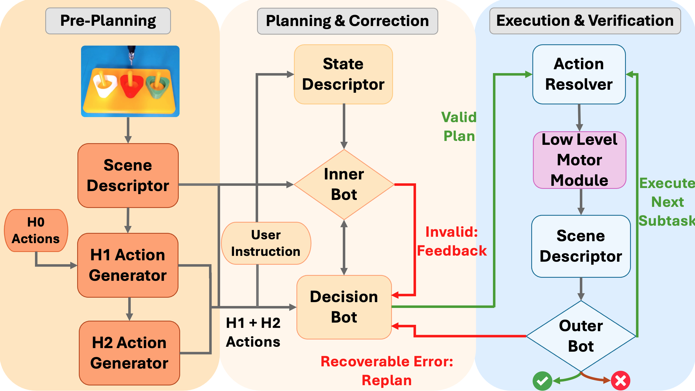
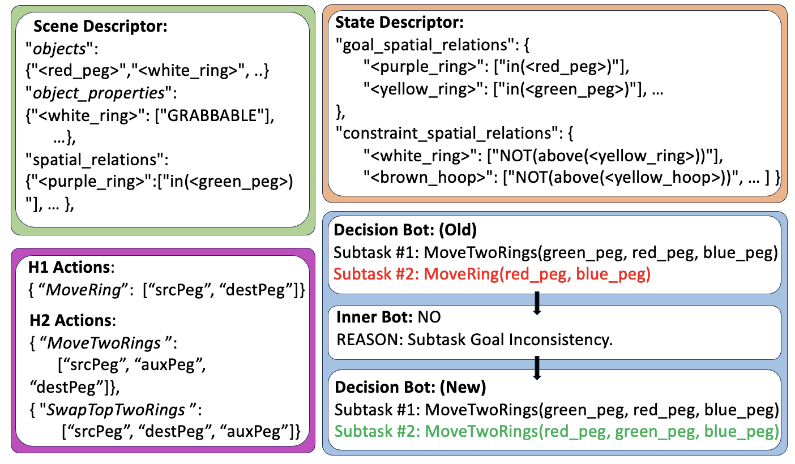
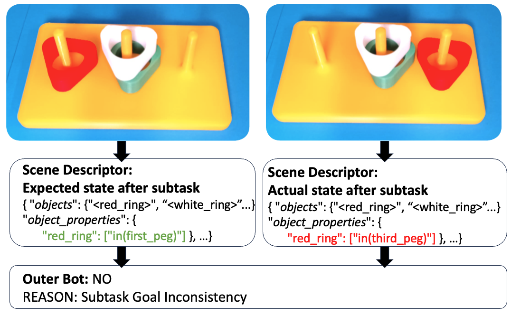
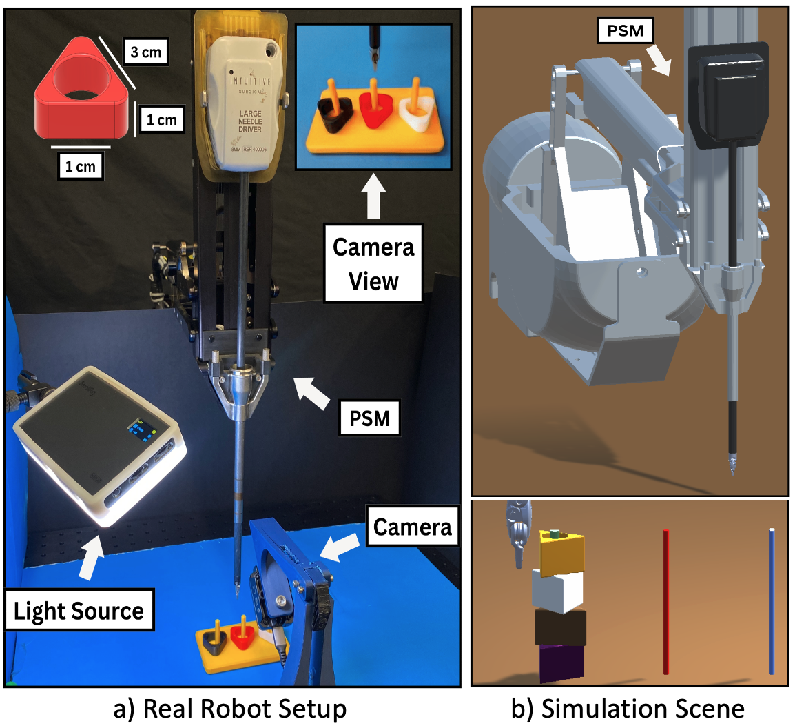
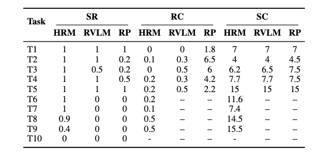
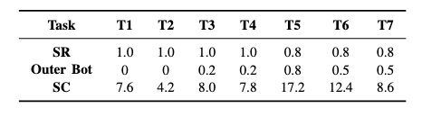
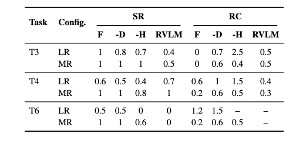
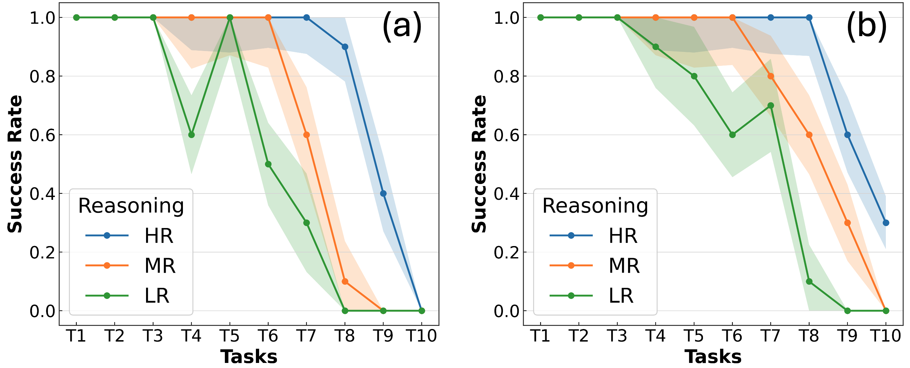
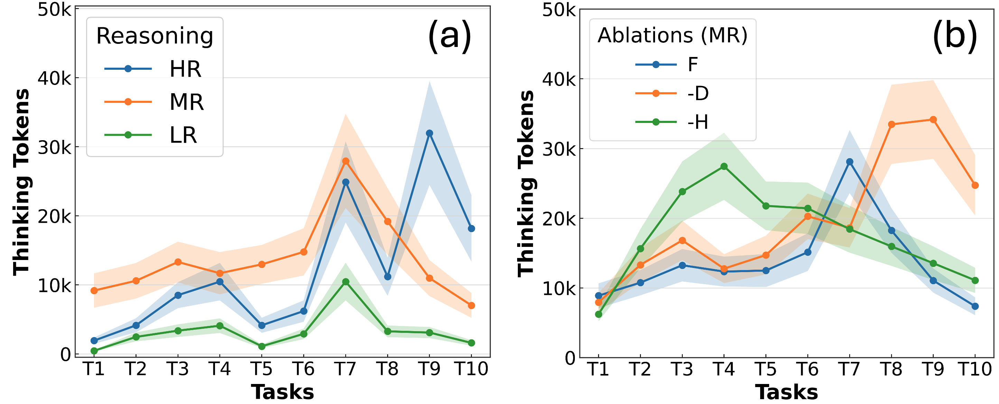

Please navigate to the codebase referenced at the top to access the project. You will need to install the latest version of Unity 6 for this project.
Peg-transfer is a well known surgical training task in the fundamentals of laparoscopic surgery. While clinicians can accurately perform complex multi-step maneuvers using the da Vinci Research Kit (dVRK) robot, prior studies in automating this task have largely focused on simple maneuvers. Vision-Language Models (VLMs) have been used for tackling such problems by combining visual understanding and language instructions. However, existing VLMs struggle with accurate perception and long horizon reasoning required for multi-step manipulation tasks such as peg-transfer. Recent developments in Reasoning Models (RM) demonstrate improved performance on mathematical reasoning benchmarks, however their planning capabilities remain unexplored in robotics.
In this study, we propose HierarchicalRM to tackle long-horizon task planning and execution, which creates higher-level reusable routines to reduce planning depth. To systematically evaluate reasoning capabilities, we introduce a surgical reasoning benchmark, called ring-transfer, which systematically varies planning complexity. The results show that HierarchicalRM significantly increases the planning horizon and successfully completes tasks that are 3X more complex compared to standard VLMs, while reducing replanning by 50%. We investigate the reasoning behaviour using thinking tokens, noting a correlation between task success and thinking tokens. This study provides initial insights how RM can be integrated in surgical planning as we progress towards higher levels of surgical autonomy.

The system runs in three stages. In Pre-Planning, a Scene Descriptor parses the scene and the H1/H2 Action Generators build a library of hierarchical actions. In Planning & Correction, a Decision Bot composes an H1/H2 plan from the state and instruction; an Inner Bot validates it and returns targeted fixes. In Execution & Verification, an Action Resolver dispatches actions via the Low-Level Motor Module, the Scene Descriptor updates state, and an Outer Bot verifies progress. Failures trigger replanning until completion or failure.

Planning and correction: Example outputs from the Scene/State Descriptors, H1/H2 action schemas, and Decision/Inner Bot planning.

Overview of the outer-bot validation loop: The Outer Bot compares the actual post-execution state with the expected goal state from the Scene Descriptor. If the current state matches the subtask goal and satisfies all constraints, the subtask is marked successful; otherwise, errors are detected and flagged for replanning. The highlighted text shows the change in state caused by executing actions for subtask 2.

Robot setup for the ring transfer tasks: The dVRK robot with a single PSM is used. We use a yellow 3D printed peg board and different colored 3D printed rings. The robot takes action based on the DepthAI Oak-1 camera.

Simulation results grouped by metric. Abbreviations: HRM = HierarchicalRM, RVLM = ReplanVLM, RP = REPLAN, SR = Success Rate, RC = Replan Count, SC = Step Count.

Real-robot results: success rate (SR), Outer Bot verification frequency (Outer Bot), and total Step Count (SC) including retries after verification triggers.

Ablation study reporting success rate (SR) and mean Replan Count (RC). Abbreviations: F = Full model, -D = w/o scene-state descriptors, -H = w/o hierarchical actions (H1/H2), RVLM = ReplanVLM.

Success-rate trends across task complexity for Low Reasoning, Medium Reasoning, and High Reasoning configs of ChatGPT (a) and Claude models (b).

Reasoning token usage trends by reasoning level across configs (a) and between primitive and hierarchical actions (b). Abbreviations: F = Full model, -D = w/o scene-state descriptors, -H = w/o hierarchical actions (H1/H2).
Please navigate to the codebase referenced at the top to access the project. You will need to install the latest version of Unity 6 for this project.